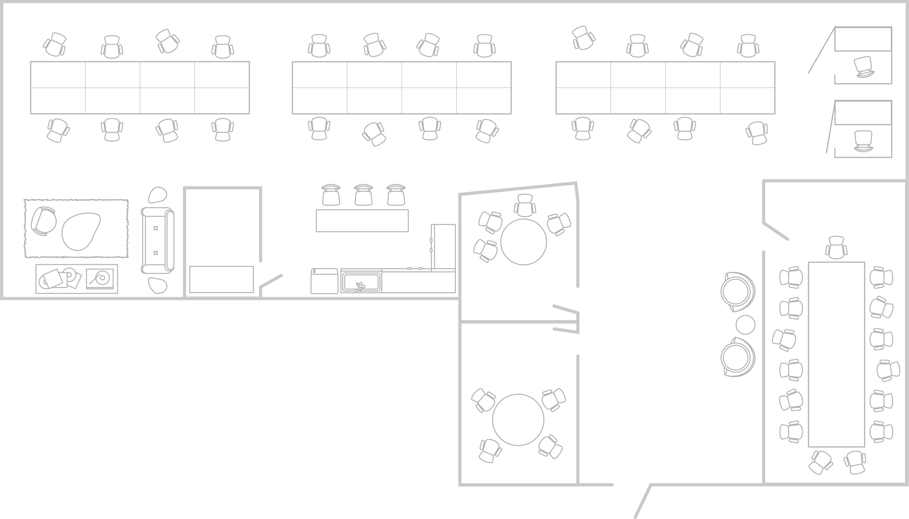
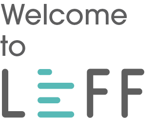
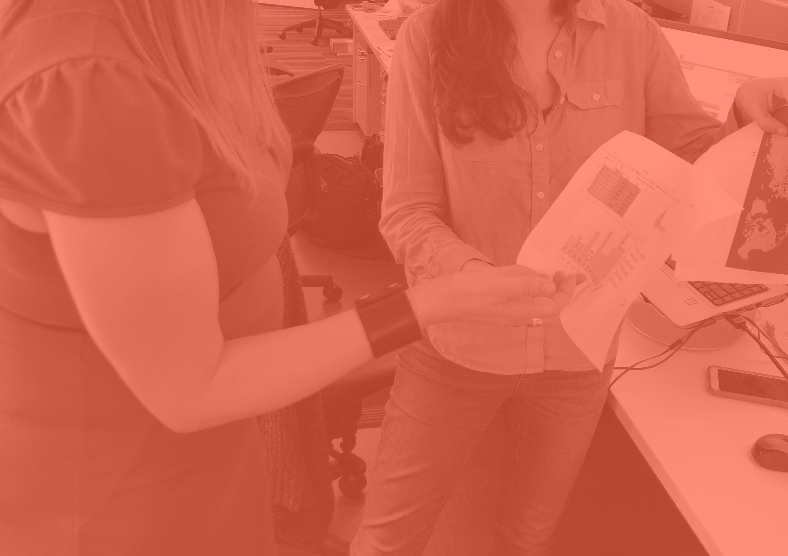
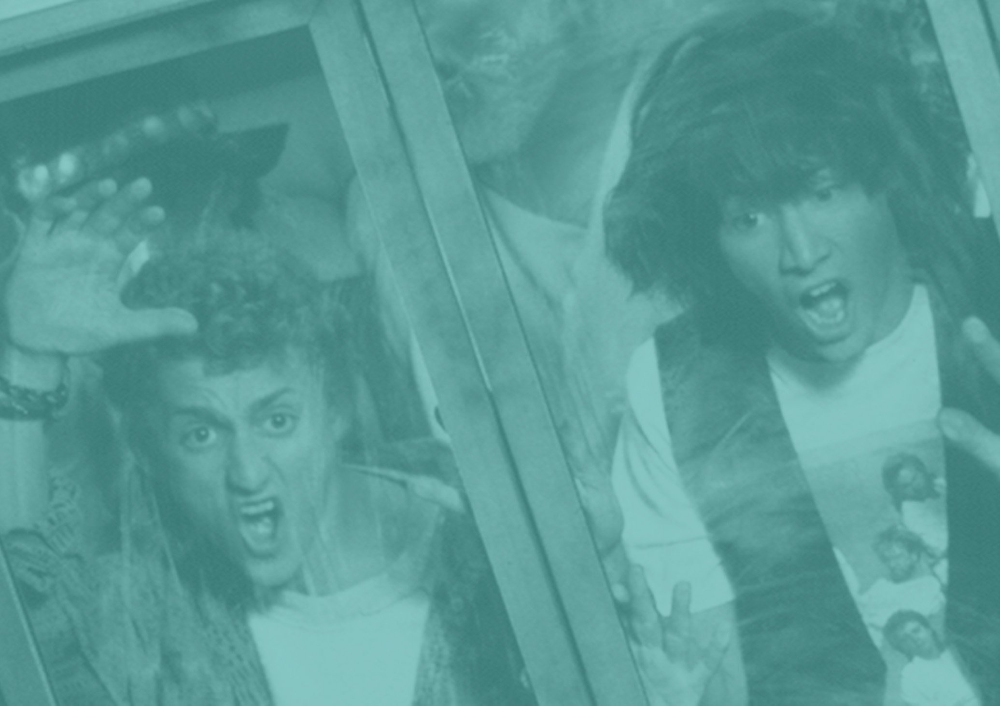
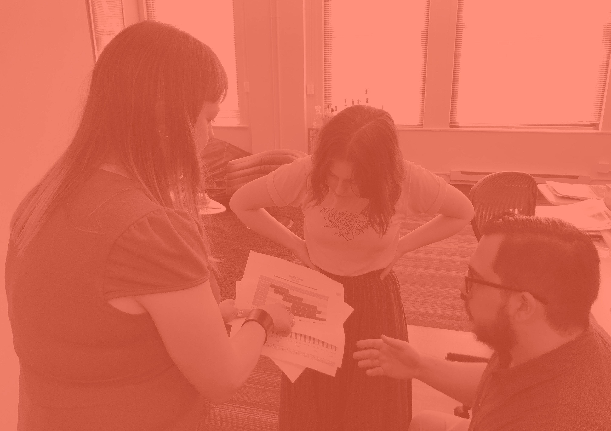
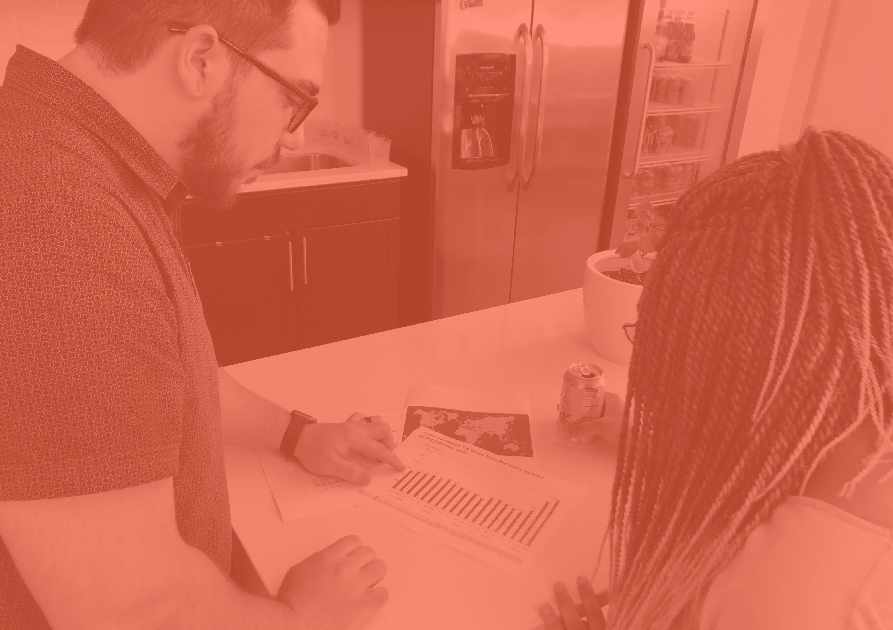
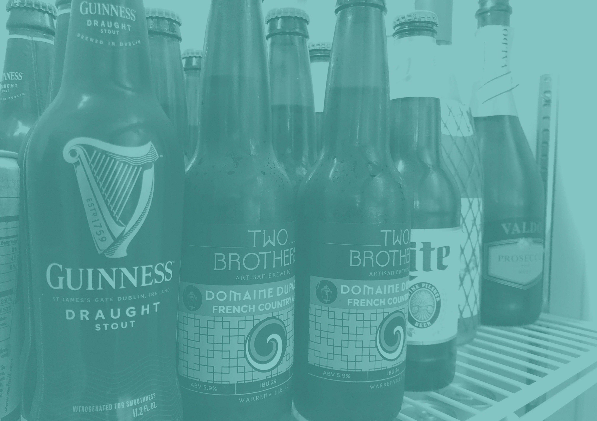
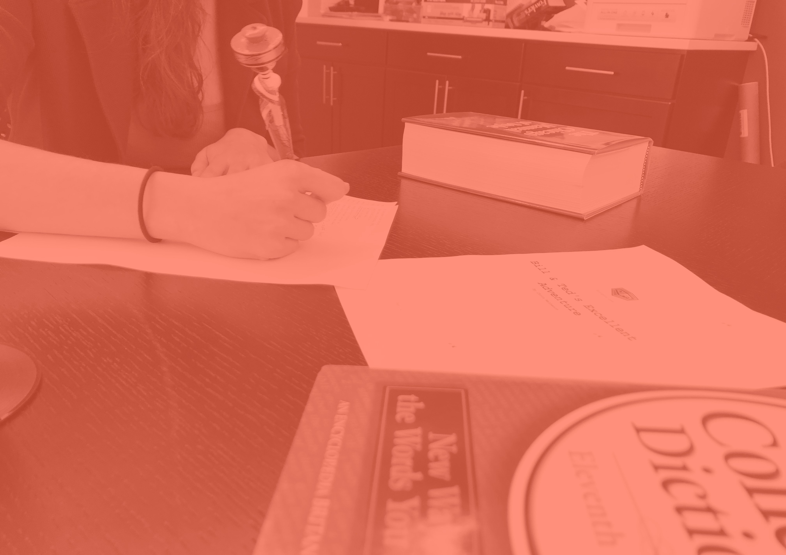

Select the colored circles to learn more about our process

Design
Production
Editorial
’70s lounge
The kitchen
Bill
Ted
Ryman Auditorium
Apollo Theater
Metro
1
3
9
8
7
10
5
6
2
4

STEP 1
Kickoff call
At the start of a project, one or two editors host a kickoff call with the author team to understand their objectives and working style and collaborate on the project plan. Editors use a floor-to-ceiling whiteboard to sketch the structure of the piece and determine next steps and timelines.
STEP 2
Narrative development
An editor works through the material to create a compelling storyline and ensure the authors’
messages are getting the right emphasis throughout the draft. Establishing the narrative is a critical step
to ensure the authors and editors agree on the overall structure, organization, and key messages.
STEP 3
Drafting
Once the narrative is approved, the editors pull together an initial draft. Some editors prefer the solitude of working in our freestanding phone booths, which are named after the protagonists in the
classic 1989 film “Bill & Ted’s Excellent Adventure.” (Unfortunately, time travel not included.)
STEP 4
Iteration
It can take several iterations to produce high-quality, distinctive content. Several editors are involved in the process to ensure fresh eyes and new perspectives are integrated at the right time.
STEP 5
Author touchpoints
At any point in the process, the editors may jump on a call with the author team to talk through feedback.
STEP 6
Production
Flawless production is what takes a really good draft to a polished, technically sound piece of content. Once the authors, editors, and other reviewers are happy with the structure, key messages, and tone, our team takes it through our in-house production process to ensure that the prose is clean, clear, and consistent and the layout is visually compelling.
STEP 8
Exhibit design
Designers work on visuals that help authors amplify their main points and enhance the text, providing a more engaging experience for the reader.
STEP 9
Script writing
Conveniently located near our coffee maker, the kitchen makes a good collaborative space for sitting down to write the scripts for a wide range of client videos. Our office has hosted several video shoots over the years, thanks in part to lots of natural light flowing in from the windows that cover half the walls.
STEP 10
Layout
Once the text and exhibits are locked, they go
to design for layout. Following layout, a
proofreader ensures the piece is error-free and ready
for dissemination.
70s LOUNGE
Our ‘70s music lounge is a focal point of our office. Posters of The Who and Freddie Mercury flank the turntable, where we spin our favorite records—from David Bowie to Heart. We also recline in the overstuffed bean bag chair, mulling over word choice, art searches, and the finer points of Chicago style.
THE KITCHEN
At Leff, we don’t gather around the water cooler—we gather around the beer (and wine and La Croix) fridge. Join us Fridays at 4 for happy hour.
METRO
These days, we can barely fit our entire staff into our large conference room. But that doesn’t keep us from getting together for all-company meetings on Mondays, company-sponsored lunches on Fridays, and the occasional bridal or baby shower or video-game competition.
TED
Fun fact: The third installment of the Bill and Ted series, starring original actors Keanu Reeves and Alex Winter, is expected to be released in August 2020.






x
x
x
x
x
x
x
x
x
x
x
x
x

STEP 7
Copy edit
The copy editor is tasked with combing through syntax to enhance clarity, looking for gaps in logic, and enforcing style rules.
x
STEP 1
Kickoff call
At the start of a project, one or two editors host a kickoff call with the author team to understand their objectives and working style and collaborate on the project plan. Editors use a floor-to-ceiling whiteboard to sketch the structure of the piece and determine next steps and timelines.
x
1